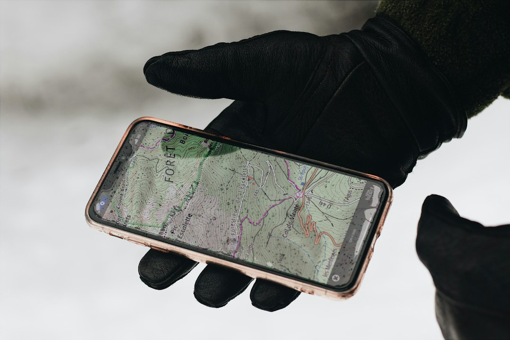

Sicurezza Cantieri Estivi: Come AURA Proximity Rivoluziona la Gestione dello Stress da Calore e il Soccorso in Ambienti Isolati

Sicurezza Cantieri in Estate: Gestione Innovativa dello Stress da Calore e Rischi Operativi per Responsabili e Guide Outdoor
- Le nuove linee guida per la sicurezza in cantiere mettono al centro il rischio da stress da calore e radiazione solare.
- Lavoratori isolati e assenza di rete 4G complicano la tempestività dei soccorsi in caso di infortuni o emergenze.
- AURA Proximity, con tecnologia Mesh P2P e rilevamento automatico di cadute, rappresenta una svolta per la sicurezza nel settore.
Analisi Approfondita della Notizia e delle Implicazioni Operative
Con l’arrivo della stagione estiva e l’aumento delle temperature, il tema della sicurezza nei cantieri all’aperto diventa cruciale. Le nuove linee di indirizzo emanate dagli enti di settore pongono una forte attenzione allo stress da calore e all’esposizione prolungata alle radiazioni solari, rischi poco contrastati con le metodologie tradizionali di gestione della sicurezza. I lavoratori esposti a tali fattori sono soggetti a cali di attenzione, malori improvvisi e incidenti, particolarmente critici per chi opera in situazioni di isolamento fisico o in aree con scarsa copertura di rete mobile.
Per i Responsabili della Sicurezza (D.Lgs 81/08), Atleti impegnati in attività outdoor, motociclisti e guide impegnate in escursioni, la sfida è doppia: prevenire effetti negativi da condizioni ambientali estreme e garantire la rapidità di intervento in caso di emergenze, anche in assenza di infrastrutture di comunicazione tradizionali.
Le Conseguenze e i Costi di Non Agire
Il mancato adeguamento alle nuove linee guida comporta una molteplicità di rischi e costi diretti e indiretti. Tra questi spiccano il fenomeno della perdita di orientamento e contatto nei viaggi in colonna, soprattutto per motociclisti e camperisti che si spostano su strade isolate, con il rischio di dispersione e difficoltà di soccorso tempestivo. Per i lavoratori isolati nei cantieri, la possibilità di cadute o infortuni senza la presenza di soccorsi immediati rappresenta un pericolo reale, amplificato dalla mancanza di rete cellulare 4G nelle aree montane o rurali.
Le conseguenze operative includono la riduzione della produttività, l’aumento delle assenze per infortuni, e l’esposizione delle aziende a pesanti sanzioni normativi e reputazionali. In ultima analisi, non gestire adeguatamente questi scenari significa anche amplificare i costi per assicurazioni e contenziosi legali derivanti da infortuni sul lavoro.
Come AURA Proximity Risolve il Problema
AURA Proximity di RM Studio si propone come soluzione tecnologica avanzata per rispondere efficacemente a queste sfide. Grazie al suo radar di prossimità tattico e alla chat Mesh P2P 100% web-based, elimina la dipendenza dalla copertura di rete cellulare, consentendo comunicazioni rapide e affidabili anche in luoghi isolati.
La piattaforma funziona direttamente dal browser, senza necessità di installare app, favorendo una rapida adozione da parte degli operatori sul campo. Tra le funzionalità chiave spiccano il co-pilota vocale a mani libere che facilita la comunicazione in movimento, e il rilevamento automatico di impatti e cadute (Man-Down con accelerazioni superiori a 3G) che invia automaticamente un SOS su WhatsApp, completo di posizione e indicazioni direzionali tramite bussola 3D integrata.
Questa combinazione unica consente ai responsabili della sicurezza e agli operatori sul campo di mantenere sempre un controllo costante, migliorare la risposta agli incidenti e minimizzare i tempi di soccorso, riducendo drasticamente i rischi associati allo stress da calore e altre condizioni avverse.
| Gestione Tradizionale | Con AURA Proximity |
|---|---|
| Dipendenza totale da rete cellulare 4G o Wi-Fi | Comunicazione Mesh P2P 100% web senza necessità di rete esterna |
| Monitoraggio e soccorso passivo, con tempi di risposta lunghi | Rilevazione automatica impatti e cadute con SOS vocale e invio immediato |
| App da scaricare e configurare, limitando l’usabilità | Accessibile via browser senza app, rapido onboarding operativo |
| Nessun supporto vocale mani libere, rischio distrazione elevato | Co-Pilota Vocale integrato per gestione sicura e senza distrazioni |
| Difficoltà nel mantenere contatti durante viaggi in colonna o escursioni | Radar di prossimità tattico che segnala presenza e distanza in tempo reale |
💡 Ti è stato utile questo approfondimento?
Condividilo con un collega o un amico del settore Motociclisti, Camperisti, Atleti, Responsabili Sicurezza Cantieri (D.Lgs 81/08) e Guide Outdoor a cui potrebbe interessare!
FAQ - Domande Frequenti per i Professionisti del Settore
1. AURA Proximity è utilizzabile anche in ambienti completamente privi di segnale 4G?
Sì, grazie alla tecnologia Mesh P2P, la comunicazione avviene direttamente tra dispositivi via browser, senza richiedere segnale cellulare o Wi-Fi.
2. È necessario scaricare un’applicazione per utilizzare AURA Proximity?
No, la soluzione è completamente web-based, accessibile da qualsiasi smartphone o dispositivo via browser, semplificando l’adozione e riducendo le barriere tecnologiche.
3. Come funziona il rilevamento automatico delle cadute e quali azioni vengono attivate?
Il sistema utilizza sensori di accelerazione (>3G) per identificare impatti o cadute improvvise. Quando attivato, invia automaticamente un SOS con posizione e informazioni dettagliate tramite WhatsApp ad un contatto di emergenza predefinito.
Inizia Subito
Pass Viaggio Singolo a €4.90 o Piano Pro a €19/mese. Nessuna app da installare.
Fonti Ufficiali e Risorse Esterne
Scopri l'Intelligenza Artificiale per la tua attività
Ottimizza i processi e aumenta le vendite con le soluzioni B2B di RM Studio.
Scopri AURA Proximity